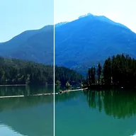

Helderheid en contrast

Past de helderheid en het contrast van het beeld aan.
Helderheid maakt het hele beeld lichter of donkerder. Contrast drijft lichte en donkere delen uit elkaar (of naar elkaar toe, met negatieve waarden). Begin met kleine stapjes: allebei gaan van -1 tot 1. Voor meer controle over schaduwen en hooglichten gebruik je Niveaus of Hooglichten & schaduwen.
Instellingen
| Instelling | Type | Bereik | Standaard |
|---|---|---|---|
| Helderheid | Getal | -1 tot 1 | 0.1 |
| Contrast | Getal | -1 tot 5 | 0.3 |
| Stijl | Keuze | Per kanaal, Kleur behouden | Per kanaal |